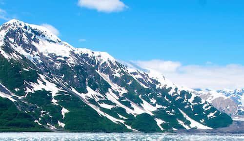
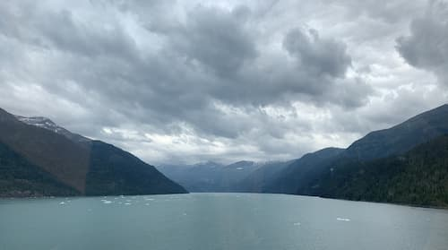

The Final Frontier
Information
- Tourism accounts for 48,000 jobs
- Cruises contribute over $157, million to the economy
- 586,412 sq. miles of land
- Containing over 100,000 glaciers
- 6,640 miles of coast
- and over 70 potentially active volcanoes.
- Tourist season goes from May to Sept.

- Weather Facts
- Average Temps 45-70 °F
- Average rainfall 200 inches annually
- Hotest temp on record 100 °F
- Coldest temp on record -80 °F
- Best month to visit - July